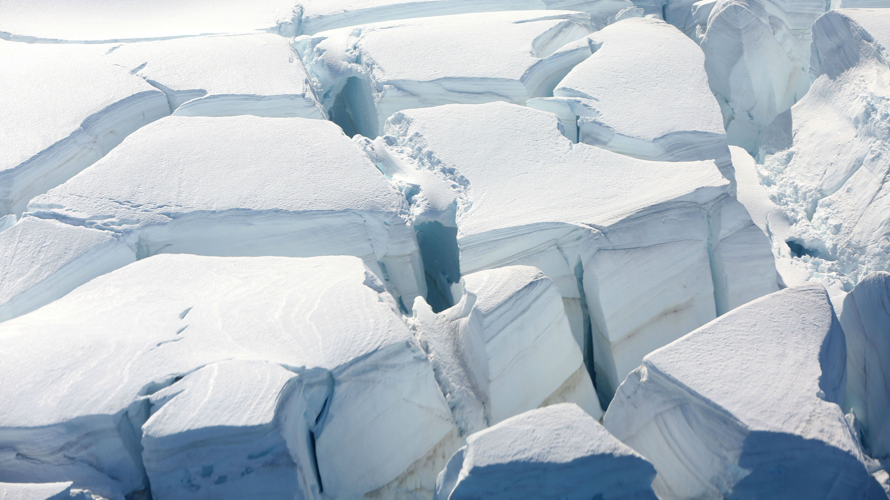

<!--
  Generated template for the PesquisaPage page.

  See http://ionicframework.com/docs/components/#navigation for more info on
  Ionic pages and navigation.
-->
<ion-header>
    <ion-navbar>
        <ion-title>Pesquisa Estabelecimento</ion-title>
    </ion-navbar>
</ion-header>


<ion-content padding>

    <ion-searchbar></ion-searchbar>

    <ion-list>
        <ion-item (click)="proxPage()">
            <ion-thumbnail item-start>
                
            </ion-thumbnail>
            <h2>Estabelecimento</h2>
            <p>Dentista sei la</p>
        </ion-item>
        <ion-item (click)="proxPage()">
            <ion-thumbnail item-start>
                
            </ion-thumbnail>
            <h2>Estabelecimento</h2>
            <p>Dentista sei la</p>
        </ion-item>
        <ion-item (click)="proxPage()">
            <ion-thumbnail item-start>
                
            </ion-thumbnail>
            <h2>Estabelecimento</h2>
            <p>Dentista sei la</p>
        </ion-item>
    </ion-list>

</ion-content>